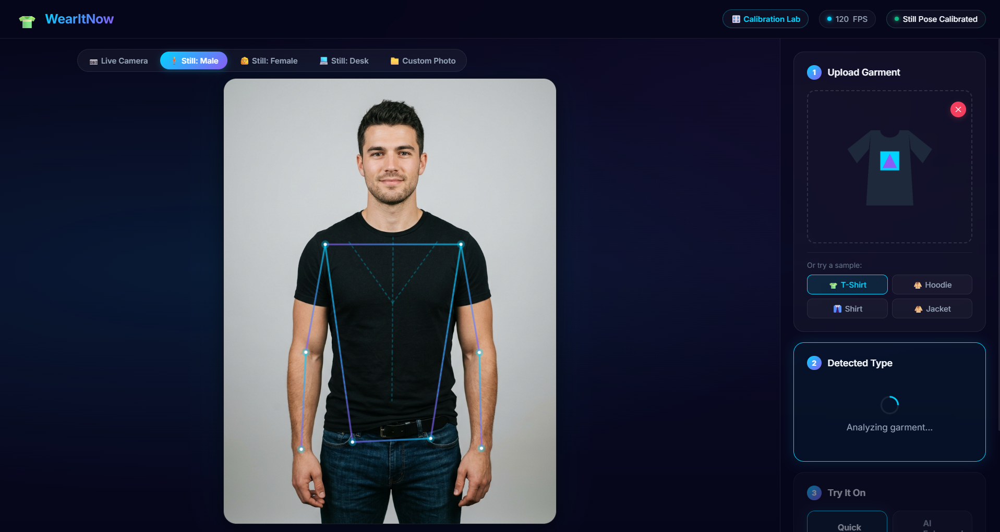
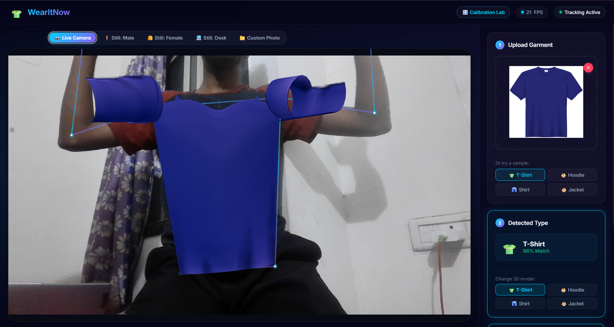
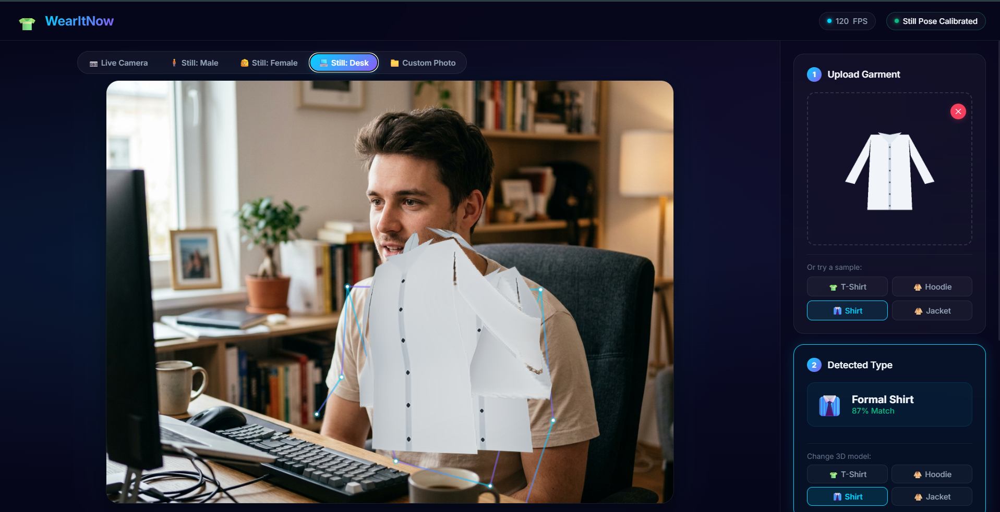

| Role | Name | Roll No. |
|---|---|---|
| Group Leader | Pranav Sable | 39 |
| Member | Kunal Sable | 38 |
| Member | Raghav Jhunjhunwala | 12 |
| Member | Arjun Salunke | 46 |
| Member | Pratitya Wankhede | 5 |
WearItNow is a web-based Augmented Reality (AR) virtual garment try-on system that lets users upload any garment photograph and instantly see it overlaid on their body in real time through their webcam or on a reference photo.
| Layer | Technology | Purpose |
|---|---|---|
| Frontend | HTML5, CSS3, Vanilla JavaScript (ES Modules) | UI, camera access, orchestration |
| AR Tracking | MediaPipe BlazePose (PoseLandmarker Full) | Real-time 3D body pose estimation (33 landmarks) |
| 3D Rendering | Three.js (WebGL) | Procedural garment mesh generation, texturing, AR overlay |
| Backend Server | FastAPI + Uvicorn (Python) | REST API, garment processing pipeline |
| Segmentation | rembg / U2-Net Portable (4.7 MB) | Automatic background removal from garment images |
| Classification | OpenAI CLIP ViT-B/32 (Zero-Shot) | Garment type detection without training data |
| CV Fallback | OpenCV + NumPy | Morphological analysis, GrabCut segmentation fallback |
User uploads garment image → Backend: Classify (CLIP) → Segment (U2-Net) → Extract Texture →
Frontend: Load 3D Garment Mesh → Body Tracking (BlazePose) → Deform & Render (Three.js) → AR Overlay on Camera Feed
┌──────────────────────────────────────────────────────────────────┐
│ FRONTEND (Browser) │
│ │
│ ┌────────────┐ ┌──────────────┐ ┌──────────────────────┐ │
│ │ Camera Feed │───▸│ BodyTracker │───▸│ GarmentRenderer │ │
│ │ (Webcam / │ │ (MediaPipe │ │ (Three.js WebGL) │ │
│ │ Photo) │ │ BlazePose) │ │ - Procedural meshes │ │
│ └────────────┘ │ - 33 3D pts │ │ - Body cage deform │ │
│ │ - EMA smooth │ │ - Texture mapping │ │
│ ┌────────────┐ └──────────────┘ └──────────────────────┘ │
│ │ Upload Img │───▸ POST /api/process-garment │
│ └────────────┘ │
└────────────────────────────────┬─────────────────────────────────┘
│ HTTP API
┌────────────────────────────────▼─────────────────────────────────┐
│ BACKEND (FastAPI + Python) │
│ │
│ Step 1: GarmentClassifier ──▸ CLIP ViT-B/32 zero-shot │
│ (+ morphological CV fallback) │
│ Step 2: GarmentSegmenter ──▸ rembg / U2-Net Portable │
│ (+ OpenCV fallback) │
│ Step 3: TextureProcessor ──▸ Extract & prepare RGBA texture │
│ │
│ Response: { classification, segmented_b64, texture_b64, bbox } │
└───────────────────────────────────────────────────────────────────┘
The core API receives an uploaded garment image, runs it through a 3-stage ML pipeline (Classify → Segment → Texture), and returns results as base64-encoded images with metadata.
server/main.py@app.post("/api/process-garment")
async def process_garment(
file: UploadFile = File(...),
mode: str = Form(default="quick"),
):
"""
Process an uploaded garment image.
1. Segments garment from background (U2-Net)
2. Classifies garment type (CLIP zero-shot)
3. Extracts and processes texture
"""
start_time = time.time()
# Read uploaded image
contents = await file.read()
image = Image.open(io.BytesIO(contents)).convert("RGB")
# Step 1: Classify the garment
classification = classifier.classify(image)
# Step 2: Segment (remove background)
seg_result = segmenter.segment(image)
# Step 3: Process texture
texture = texture_processor.process(
seg_result["segmented"],
classification["category"],
mode=mode,
)
return JSONResponse({
"success": True,
"classification": classification,
"texture": texture_b64,
"segmented": segmented_b64,
"bbox": seg_result["bbox"],
"timing": { ... },
})
Uses OpenAI's CLIP ViT-B/32 to classify garments with zero training data, with a morphological CV analyzer as fallback.
server/services/classifier.pyGARMENT_CATEGORIES = {
"tshirt": { "labels": ["a t-shirt", "a casual short sleeve t-shirt", ...] },
"hoodie": { "labels": ["a hoodie", "a hooded sweatshirt", ...] },
"formal_shirt": { "labels": ["a formal shirt", "a button down dress shirt", ...] },
"jacket": { "labels": ["a jacket", "a winter coat", "a bomber jacket", ...] },
}
class GarmentClassifier:
def classify(self, image):
# Primary: CLIP zero-shot
results = self.pipe(image, candidate_labels=ALL_LABELS)
category_scores = {cat_id: 0.0 for cat_id in GARMENT_CATEGORIES}
for result in results:
cat_id = LABEL_TO_CATEGORY[result["label"]]
category_scores[cat_id] += result["score"]
best_category = max(category_scores, key=category_scores.get)
return { "category": best_category, "confidence": ..., "all_scores": ... }
def _morphology_classify(self, image):
# Fallback: Sleeve length, collar shape, hood dome, button placket
# OpenCV morphological analysis
...
Tracks 33 3D body landmarks in real time and constructs an 18-point anatomical body cage used for deformable garment fitting.
static/js/tracker.jsexport class BodyTracker {
async initialize(onProgress = null) {
// Load MediaPipe PoseLandmarker (Full model - GPU, with CPU fallback)
this.landmarker = await PoseLandmarkerClass.createFromOptions(wasmResolver, {
baseOptions: {
modelAssetPath: "pose_landmarker_full.task",
delegate: "GPU",
},
runningMode: "VIDEO",
numPoses: 1,
minPoseDetectionConfidence: 0.5,
minTrackingConfidence: 0.5,
});
}
detect(video) {
const results = this.landmarker.detectForVideo(video, timestamp);
// Apply Exponential Moving Average (EMA) filter for jitter-free tracking
this.smoothedLandmarks = this._smoothLandmarks(results.landmarks[0]);
return this._computeMetrics(this.smoothedLandmarks, ...);
}
_buildBodyCage(lm) {
// 18-point anatomical cage:
// neck, clavicleLeft/Right, shoulders, armpits,
// sternum, solarPlexus, navel, ribs, waist, hips
const shoulderWidth = Math.hypot(ls.x - rs.x, ls.y - rs.y);
const neck = { x: shoulderCenter.x, y: shoulderCenter.y - shoulderWidth * 0.04 };
// ... (interpolated anatomical points)
return { neck, clavicleLeft, ..., shoulderWidth, torsoHeight };
}
}
Renders procedural garment meshes with real-time body-cage deformation and smooth interpolation for jitter-free AR.
static/js/garment_renderer.jsexport class GarmentRenderer {
_initThree() {
this.scene = new THREE.Scene();
this.camera = new THREE.PerspectiveCamera(50, this.aspectRatio, 0.1, 100);
this.renderer = new THREE.WebGLRenderer({
canvas: this.canvas,
alpha: true, // Transparent background for AR overlay
antialias: true,
});
this.renderer.toneMapping = THREE.ACESFilmicToneMapping;
// Studio cloth lighting (key, fill, rim)
this.scene.add(new THREE.AmbientLight(0xffffff, 1.25));
this.scene.add(keyLight); // upper-front right
this.scene.add(fillLight); // upper-front left
this.scene.add(rimLight); // subtle rim
}
update(poseData, delta) {
if (poseData.bodyCage && this.currentGarment.userData?.updateDeformation) {
// FULL LANDMARK-ANCHORED MESH WARPING
// Deform garment vertices directly to anatomical cage positions
this.currentGarment.userData.updateDeformation(poseData.bodyCage, this.camera);
} else {
// Fallback: Rigid transform with calibrated presets
// Foreshortening: scaleX = (width / cos(yaw)) * fitFactor
// Yaw inversion: yaw = -rawYaw * 1.20
}
// Smooth interpolation (damping) for stable AR
this.currentPos.lerp(this.targetPos, 0.35);
this.currentScale.lerp(this.targetScale, 0.35);
this.renderer.render(this.scene, this.camera);
}
}
Isolates garments from backgrounds using the lightweight U2-Net Portable model with alpha matting for clean edges.
server/services/segmenter.pyclass GarmentSegmenter:
def __init__(self):
from rembg import new_session
self.session = new_session("u2netp") # 4.7MB lightweight model
def segment(self, image):
from rembg import remove
segmented = remove(
image,
session=self.session,
alpha_matting=True,
alpha_matting_foreground_threshold=240,
alpha_matting_background_threshold=15,
)
return { "segmented": segmented, "mask": mask, "bbox": bbox }
Below are screenshots demonstrating the AR try-on system in action:



| Feature | Description |
|---|---|
| Real-Time Pose Estimation | MediaPipe BlazePose Full – 33 3D landmarks, GPU-accelerated, ~30 FPS |
| Anatomical Body Cage | 18-point deformable cage (neck, clavicles, armpits, ribs, waist, hips) for mesh warping |
| EMA Jitter Smoothing | Exponential Moving Average filter (α=0.75) on landmark stream for stable AR |
| Procedural Garment Meshes | Dynamically generated Three.js geometry for T-Shirts, Hoodies, Formal Shirts, Jackets |
| Calibrated AR Presets | 12 ground-truth calibrated presets (Male/Female/Desk × 4 garment types) |
| Vertex-Level Deformation | Each garment vertex is anchored to anatomical cage control points in real time |
| WebGL AR Overlay | Transparent Three.js canvas layered over camera feed with ACES Filmic tone mapping |
| Zero-Shot AI Classification | CLIP ViT-B/32 classifies garments without any fine-tuning or training data |
| Neural Segmentation | U2-Net Portable removes backgrounds with alpha matting for clean garment extraction |
| Multi-Source Input | Webcam live feed, reference male/female/desk photos, or user-uploaded photos |
# 1. Clone / navigate to the project directory cd WearItNow # 2. Run the application (auto-installs dependencies on first run) python run.py # 3. Open in browser # → http://localhost:8000
The launcher automatically checks and installs all required Python packages, downloads ML models (~800 MB on first run), and starts the FastAPI server on port 8000.
# Core server fastapi==0.115.0 uvicorn[standard]==0.30.0 python-multipart==0.0.9 # Image processing opencv-python>=4.8.0 numpy>=1.24.0 Pillow>=10.0.0 # Garment segmentation (U2-Net) rembg==2.0.57 # Garment classification (CLIP zero-shot) transformers>=4.40.0 torch>=2.0.0 torchvision>=0.15.0